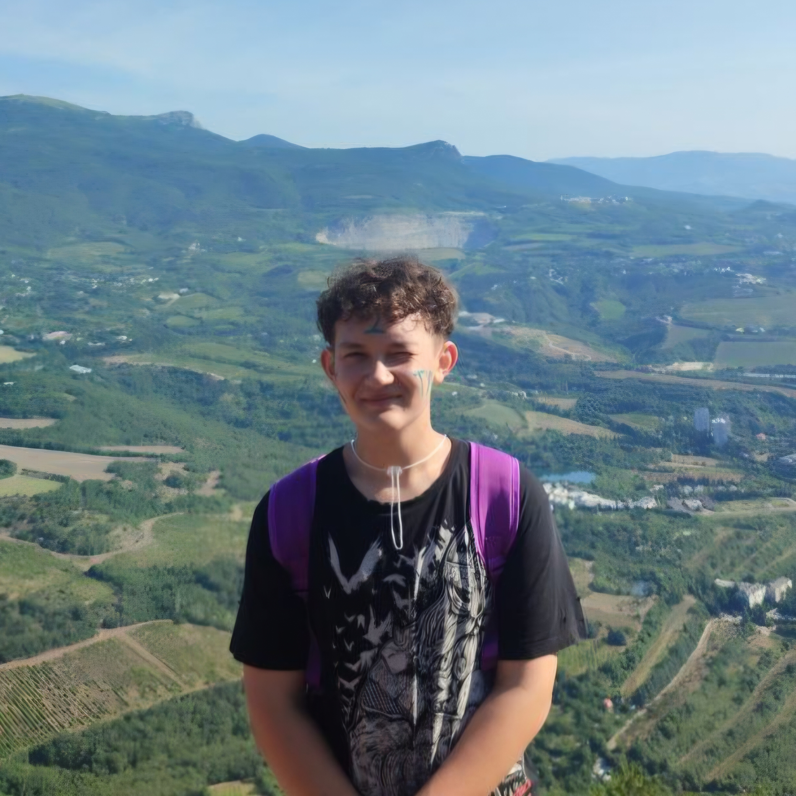

Обо мне
Я люблю путешествовать (клишейно))).
Моим идейным вдохновителем является мой дядя, который в 30+ лет загорелся идеей альпинизма, нашёл единомышленников и буквально год назад взошёл на Эльбрус!
Мой же путь, как путешественника, начался в старшей школе - с двух поездок в МДЦ "Артек" с интервалом в 1 год. Символично, но оба раза я попадал в профильный туристический отряд (сначала по распределению, потом - по велению сердца).
Аю-Даг (570,8; фото с подъёма см. ниже), Куш-Кая (664,3) - вот список вершин Южного Берега Крыма, покорённых мной. Тогда я и понял, что никакие моря и океаны не займут в моём сердце такое место, какое занимают горы.
Своим незакрытым гештальтом я считаю Розу Пик (2320, недалеко от г. Сочи). Я очень хотел взойти туда пешим ходом, но по некоторым обстоятельствам пришлось подниматься на фуникулёрах по канатной дороге. Через несколько лет эта вершина обязательно поддастся моим двоим, и мои глаза снова увидят те завораживающие пейзажи Кавказских гряд, внизу - облака, а впереди - извилистую дорогу к парку водопадов "Менделиха".

Навыки
- Опыт восхождения на вершины;
- Умение работы с основным оборудованием (карабины, страховки и др.);
- Вязание узлов на руках;
- Вязание узлов на опоре;
- Конструирование канатной переправы через препятствие (в команде);
- Знание английского языка (смогу объясниться с любым);
- Самостоятельная организация поездок (наездился и налетался на олимпиадах).
Посещённые вершины
В хронологическом порядке:
- Аю-Даг (570,8);
- Куш-Кая (664,3);
- Кокшетау a.k.a. Синюха (947);
- Имантау (621);
- Роза Пик (2320).